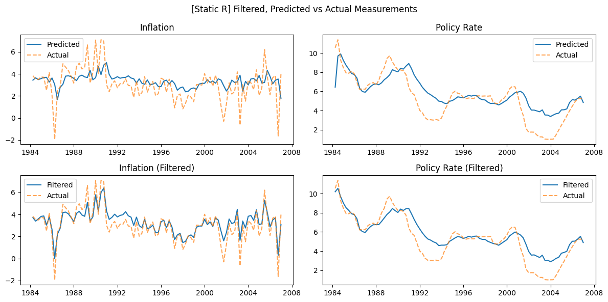
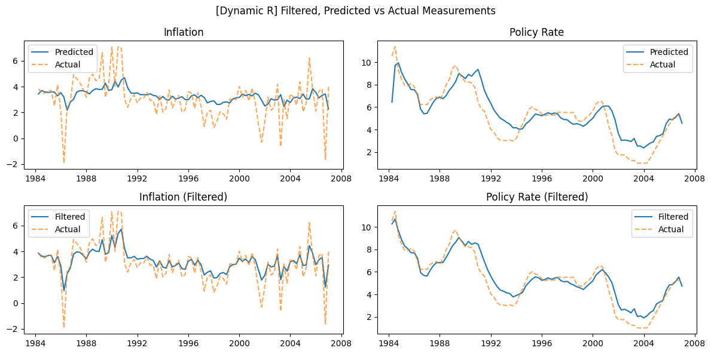
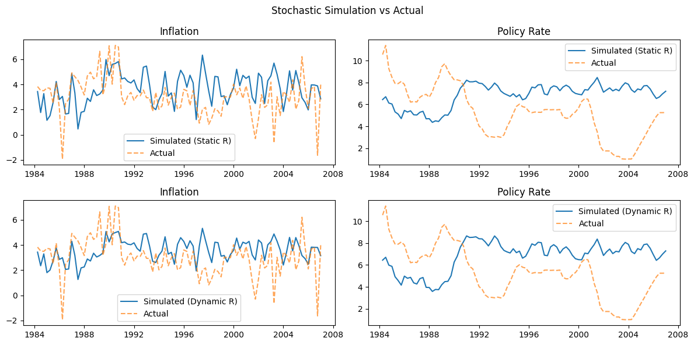

Estimation Guide
TL;DR
Refer to this notebook for an example parameter estimation workflow.
Read the Quickstart Guide
This guide only handles the estimation process and is written assuming the reader have some familiarity for the core DSGE API (i.e. DSGESolver, SolvedModel etc.). It is strongly recommended to at least have read the Quickstart Guide before working with parameter estimation.
This guide walks through the parameter estimation workflow of SymbolicDSGE using an example setup and a MCMC sampling based Bayesian Estimation setup.
We will cover:
- How priors are built (and why transforms matter)
- How to run MCMC through
DSGESolver.estimate_and_solve(...) - What outputs to expect from the process
- How static-
Rvs dynamic-Rupdates change fit diagnostics
Parse Configs and Compile
from SymbolicDSGE import ModelParser, DSGESolver
parsed = ModelParser("MODELS/POST82.yaml").get_all()
model, kalman = parsed
solver = DSGESolver(model, kalman)
compiled = solver.compile(
n_state=3, # (1)!
n_exog=3, # (2)!
)
- Number of state variables for the linear solver backend.
- Number of exogenous variables; first
n_exogvariables must match the exogenous order contract.
Data Input
In this example, observed "measurements" are pulled from FRED and transformed into model units first. In this guide we assume you already have observed as a DataFrame with observable columns.
Prior Specification
Priors are objects we use to define our "prior beliefs" about a parameter. To give a quick example, take a model parameter \(\beta\) (discount factor).
In theory, \(\beta\) can be any number such that \(\beta \in (0,1)\). However, we know that \(\beta\) should reside more or less within \(0.95 \pm 0.05\). We can use a prior on \(\beta\) to penalize the optimizer when it strays further away from our belief to ensure our parameter estimations remain economically interpretable. In SymbolicDSGE priors can be defined with the make_prior function as such:
from SymbolicDSGE.bayesian import make_prior
beta_prior = make_prior(
distribution="beta", # (1)!
parameters={"a": 200 * 0.971, "b": 200 * 0.029}, # (2)!
transform="logit", # (3)!
transform_kwargs={} # (4)!
)
- Distribution in parameter space.
- Parameters of the distribution. This yields a Beta distribution with heavily concentrated probability mass around the mean of 0.971.
- Transform function mapping the parameter space to the unconstrained optimizer space. Here,
logitmaps(0, 1) -> (-inf, inf). - Parameters of the transform function are passed here if necessary.
The prior specification defines Distributions such that the optimizer can interact with the distribution object on the unconstrained space.
For example, in order to optimize in an unbounded search space \(\R = (-\infty, \infty)\) we can use any distribution of our choosing regardless of the bounds,
as long as we specify a Transform that maps the distribution support \((a, b) \mapsto \R\). We then rely on the Transform objects to apply a "Change of Variables" to produce the unbounded search input. The Transform will also be responsible for inverting the optimizer output into the parameter space (\(\R \mapsto (a,b)\)) we wish to search over. To give a concrete example, a logit transform for example would map \((0,1) \mapsto\R\) in the forward direction. In this scenario the inverse logit would precisely do the opposite $ inv(Z) \to X, \, X \in (0,1) $.
Change of Variables Details
All transformations except Identity (which returns the input itself as output) are examples of the procedute defined in calculus as Change of Variables. We deal with a specific subset of this procedure relating to probability density functions (PDFs). Below we will show how applying/inverting a transform function blindly results in inaccurate conversions and try to outline an intuition for the process. We will try to make it as easy to reason about as possible and some details can get skipped.
A random variable \(Z \in\R\) can follow any distribution \(f_z(Z)\in\R\). However after applying any transformation \(Z \to X\) such that \(Z \neq X\); we can intuitively (and mathematically) agree that the distribution \(f_z(X)\) no longer accurately describes the density of the transformed variable \(X\).
Fortunately, there's a deterministic and generally applicable correction we can use to ensure \(f_z(Z)\) can be accurately represented in of \(X\). Denoting the transformation \(g_z(Z) \to X\), we can adjust for the mismatch in densities using the derivative (or Jacobian) \(\frac{d}{dZ}g_z(Z)\). Skipping the theory, the important bit of knowledge is that \(f_z(X)\) is off from the accurate description of \(X\)'s probability distribution by a factor of the above specified derivative. Therefore, in the scalar case we can denote:
Using make_prior we can define individual priors for each parameter we wish to estimate:
prior_spec = {
"beta": make_prior(
"beta",
parameters={"a": 200*0.971, "b": 200*0.029},
transform="logit", # (1)!
),
"kappa": make_prior(
"gamma",
parameters={"mean": 0.58, "std": 0.1},
transform="log", # (2)!
),
...,
"rho_gz": make_prior(
"normal",
parameters={"mean": 0.0, "std": 0.2},
transform="affine_logit", # (3)!
transform_kwargs={"low": -1.0, "high": 1.0}
),
"sig_r": make_prior(
"gamma",
parameters={"mean": 0.18, "std": 0.1},
transform="log",
),
}
logitdoes not require parameters and (inverse) transforms to (0, 1)logmaps real numbers to non-negative reals without requiring parameters.affine_logittakes a low (\(a\)) and high (\(b\)) bound to map (a, b)
Running the Estimation
The estimation process is carried out by DSGESolver.estimate() and DSGESolver.estimate_and_solve. The former returns the estimation results, but does not provide a SolvedModel using said estimation output. Conversely, the latter provides both the results, and an immediately usable SolvedModel object derived from the results.
res, sol = solver.estimate_and_solve(
compiled=compiled,
y=observed, # (1)!
method="mcmc", # (2)!
priors=prior_spec,
estimated_params=list(prior_spec.keys()),
steady_state=[0.0, 0.0, 0.0, 0.0, 0.0],
posterior_point='mean', # (3)!
n_draws=1000, # (4)!
burn_in=500, # (5)!
thin=1, # (6)!
update_R_in_iterations=False, # (7)!
)
- Observed data we want to calibrate against
- Chosen from
{'mle', 'map', 'mcmc'}. - Which point from the posterior distribution to use as parameters. Chosen from
{'mean', 'mode' == 'map', 'last'}. - Retained draws.
- Burn-in iterations.
- Keeps every
thin-th draw. Specifying athin> 1 discards some samples and is commonly used to prevent autocorrelation. - If parameters of R are being estimated, setting this to
Truewill re-compute the R matrix using the current sample's parameters. Otherwise, R will be estimated once before the run begins and will be kept static throughout the run.
MCMC sampling concluded in 34.93 seconds with 42.95 iterations per second.
[Estimator:mcmc] BK stability warnings encountered during search: 0
Inspecting the Results
The estimation will return a MCMCResult or OptimizationResult depending on the specified method. Alongside other metadata, these objects report:
- Order of parameters in the sample array(s)
- Each sample drawn (if multiple are drawn)
- Log-Likelihood of each sample
The result objects are a raw outlook into the estimator internals during the method run. Information regarding the parameters selected can be derived from a result object; or the SolvedModel objects can be directly inspected via SolvedModel.config.calibration.parameters.
Below is a snippet creating a "summary" report given a result object:
import numpy as np
import pandas as pd
pd.Series(
{
**dict(zip(res.param_names, np.mean(res.samples, axis=0))), # (1)!
"loglik": np.mean(res.logpost_trace),
"accept_rate": res.accept_rate, # (2)!
"n_draws": res.n_draws,
"burn_in": res.burn_in,
"thin": res.thin,
}
)
- We used
posterior_point='mean', therefore we're computing the mean of all sample draws to accurately recreate the parameters being used inside the model. - Acceptance rate is specific to MCMC and is a percent measure of how many samples were "acceptable" within the specified priors and bounds; and of course, model stability constraints. (An unsolvable model is automatically disqualified)
beta 0.971773
rho_r 0.840123
rho_g 0.860232
rho_z 0.873493
psi_pi 2.736531
psi_x 0.339134
kappa 0.366632
tau_inv 0.569496
rho_gz 0.149944
meas_rho_ir 0.230454
sig_r 0.143704
sig_g 0.150102
sig_z 0.685228
meas_infl 0.574781
meas_rate 0.934977
loglik -300.602336
accept_rate 0.328667
n_draws 1000.000000
burn_in 500.000000
thin 1.000000
dtype: float64
Fit Diagnostics
In this section we will compare the filtered and predicted states coming from a Kalman Filter (KF) ran on:
- A model using static \(R\) to estimate parameters
- The same model using dynamic \(R\) to estimate parameters
Both predicted measurements y_pred and filtered measurements y_filt will be compared against the actual observed data used in estimation.
Afterwards, a simulation using identical shock arrays for static and dynamic estimated models will be compared against the actual data.
Static R fit:

Dynamic R fit:

Simulation vs actual (both solutions):

Practical Notes
When to Use MLE vs MAP vs MCMC
MLE: MLE is a so called "pure" estimation technique used if and only if we want the set of parameters that best fit the data; without imposing any other constraints.MAP: MAP is similar to MLE in the sense that it returns a single set of parameters maximizing a given objective. However, MAP has prior beliefs in the objective function. Therefore, the maximization yields a result both respecting the plain likelihood and our beliefs regarding parameters.MCMC: MCMC is a sampling method aimed to generate a posterior distribution using our prior beliefs and the likelihood. Effectively, MCMC samples multiple parameter sets sampled with respect to priors and computes their likelihood. In this case, we no longer have a maximization problem; we create a sampled distribution and use a point in said distribution as the parameters. This approach often yields more stable parameter compositions and allows more freedom regarding exactly which "point" to select as the parameters.
Further Steps
More detailed information regarding estimation can be found via the references. Alternatively you can refer to this example notebook to see parameter estimation workflow used when generating the outputs for this guide.
References
This guide focuses on solver-facing estimation flow. For API-level references, use: